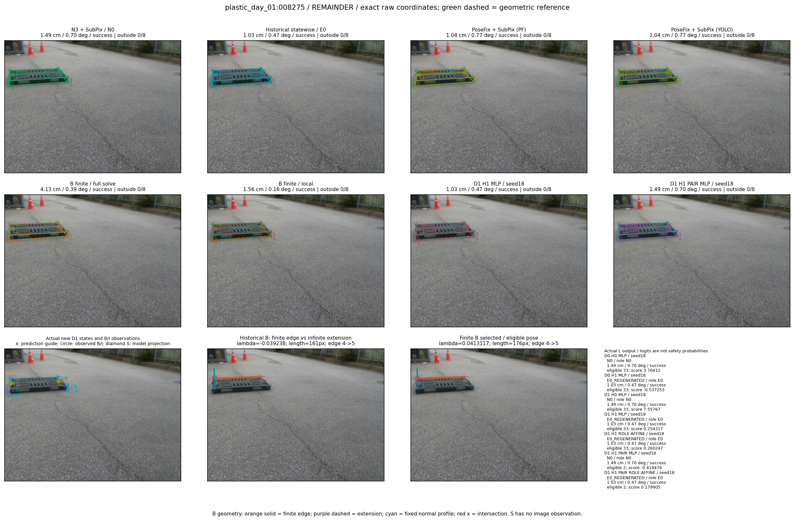

Whole-pallet pose errors; reference is a fixed geometric annotation, not certified physical GT.


Scores are uncalibrated logits. N0 retention is a numerical pose alias; it differs from H0 none or B fallback. B/I and profiles in baseline/B panels are original observations; L panels use new D1 observations. Only one deterministic supported B query is shown in a thumbnail; full support counts are below. Grey privacy rectangles edit the display copy only and are unrelated to O states; all observations were measured on original pixels. Thumbnails use JPEG quality85; detailed scientific panels are PNG.
| Method | Whole pose / cm, deg | Actual source | Selected ID | Score | Archived candidates | Eligible | N0 retained | H0 none | Fallback | Finite profiles |
|---|---|---|---|---|---|---|---|---|---|---|
| Raw YOLO + F | 15.21 cm / 0.85 deg / failure | OTHER | None | N/A | N/A | N/A | False | N/A | None | N/A |
| N3 + SubPix / N0 | 1.49 cm / 0.70 deg / success | N0 | None | N/A | N/A | N/A | True | N/A | None | N/A |
| Historical statewise / E0 | 1.03 cm / 0.47 deg / success | E0_REGENERATED | None | N/A | N/A | N/A | False | N/A | False | N/A |
| PoseFix raw | 9.78 cm / 0.54 deg / failure | OTHER | None | N/A | N/A | N/A | False | N/A | None | N/A |
| PoseFix + SubPix (PF) | 1.04 cm / 0.77 deg / success | OTHER | None | N/A | N/A | N/A | False | N/A | False | historical support records 9; finite audit N/A |
| PoseFix + SubPix (YOLO) | 1.04 cm / 0.77 deg / success | OTHER | None | N/A | N/A | N/A | False | N/A | False | historical support records 9; finite audit N/A |
| Historical L, seed18 | 1.49 cm / 0.70 deg / success | N0 | N0 | N/A | 67 | 67 | True | True | True | N/A |
| Historical B fixed bank | 57.00 cm / 89.04 deg / failure | OTHER | G10/SWAPPED_WD/sample/0 | N/A | N/A | N/A | False | N/A | False | N/A |
| Historical B full | 55.06 cm / 87.37 deg / failure | OTHER | NEW/B/SWAPPED_WD/h0/G13/SWAPPED_WD/sample/0/PROPOSED_NATIVE_YAW_0 | N/A | N/A | N/A | False | N/A | False | N/A |
| Historical edge full | 55.93 cm / 87.48 deg / failure | OTHER | NEW/edge/SWAPPED_WD/h0/G13/SWAPPED_WD/sample/0/PROPOSED_NATIVE_YAW_0 | N/A | N/A | N/A | False | N/A | False | N/A |
| Historical AB full | 55.06 cm / 87.37 deg / failure | OTHER | NEW/AB/SWAPPED_WD/h0/G13/SWAPPED_WD/sample/0/PROPOSED_NATIVE_YAW_0 | N/A | N/A | N/A | False | N/A | False | N/A |
| B finite / fixed bank | 1.03 cm / 0.47 deg / success | E0_REGENERATED | G13/ORIGINAL_WD/sample/0 | N/A | N/A | N/A | False | N/A | False | 23/23 |
| B finite / full solve | 4.13 cm / 0.39 deg / success | OTHER | NEW_FINITE/B/ORIGINAL_WD/h0/G13/ORIGINAL_WD/sample/0/PROPOSED_NATIVE_YAW_0 | N/A | N/A | N/A | False | N/A | False | 23/23 |
| B finite / local | 1.56 cm / 0.16 deg / success | OTHER | NEW_FINITE/B/ORIGINAL_WD/h0/N0_LOCAL_SAME_PHYSICAL_POSE/ORIGINAL_WD | N/A | N/A | N/A | False | N/A | False | 23/23 |
| Edge finite / full solve | 5.54 cm / 0.78 deg / failure | OTHER | NEW_FINITE/edge/ORIGINAL_WD/h0/G13/ORIGINAL_WD/sample/0/PROPOSED_NATIVE_YAW_0 | N/A | N/A | N/A | False | N/A | False | 23/23 |
| D0 H0 MLP / seed18 | 1.49 cm / 0.70 deg / success | N0 | N0 | 3.7041122913360596 | 33 | 33 | True | True | True | N/A |
| D0 H0 MLP / seed19 | 1.49 cm / 0.70 deg / success | N0 | N0 | 4.419548034667969 | 33 | 33 | True | True | True | N/A |
| D0 H0 MLP / seed20 | 1.49 cm / 0.70 deg / success | N0 | N0 | 2.230926275253296 | 33 | 33 | True | True | True | N/A |
| D0 H1 MLP / seed18 | 1.03 cm / 0.47 deg / success | E0_REGENERATED | E0_REGENERATED | -0.5372529625892639 | 33 | 33 | False | False | False | N/A |
| D0 H1 MLP / seed19 | 1.03 cm / 0.47 deg / success | E0_REGENERATED | E0_REGENERATED | -0.709895670413971 | 33 | 33 | False | False | False | N/A |
| D0 H1 MLP / seed20 | 1.03 cm / 0.47 deg / success | E0_REGENERATED | E0_REGENERATED | -1.58774733543396 | 33 | 33 | False | False | False | N/A |
| D1 H0 MLP / seed18 | 1.49 cm / 0.70 deg / success | N0 | N0 | 7.557666778564453 | 33 | 33 | True | True | True | N/A |
| D1 H0 MLP / seed19 | 1.49 cm / 0.70 deg / success | N0 | N0 | 7.862997531890869 | 33 | 33 | True | True | True | N/A |
| D1 H0 MLP / seed20 | 1.49 cm / 0.70 deg / success | N0 | N0 | 7.262850284576416 | 33 | 33 | True | True | True | N/A |
| D1 H1 MLP / seed18 | 1.03 cm / 0.47 deg / success | E0_REGENERATED | E0_REGENERATED | 0.2543169856071472 | 33 | 33 | False | False | False | N/A |
| D1 H1 MLP / seed19 | 1.03 cm / 0.47 deg / success | E0_REGENERATED | E0_REGENERATED | 0.49598419666290283 | 33 | 33 | False | False | False | N/A |
| D1 H1 MLP / seed20 | 1.03 cm / 0.47 deg / success | E0_REGENERATED | E0_REGENERATED | -0.348490446805954 | 33 | 33 | False | False | False | N/A |
| D1 H1 ROLE AFFINE / seed18 | 1.03 cm / 0.47 deg / success | E0_REGENERATED | E0_REGENERATED | 0.2602473497390747 | 33 | 33 | False | False | False | N/A |
| D1 H1 ROLE AFFINE / seed19 | 1.49 cm / 0.70 deg / success | N0 | N0 | -0.351917028427124 | 33 | 33 | True | False | False | N/A |
| D1 H1 ROLE AFFINE / seed20 | 1.03 cm / 0.47 deg / success | E0_REGENERATED | E0_REGENERATED | 0.16897034645080566 | 33 | 33 | False | False | False | N/A |
| D1 H1 PAIR MLP / seed18 | 1.49 cm / 0.70 deg / success | N0 | N0 | -0.41847848892211914 | 33 | 2 | True | False | False | N/A |
| D1 H1 PAIR MLP / seed19 | 1.49 cm / 0.70 deg / success | N0 | N0 | -0.10964177548885345 | 33 | 2 | True | False | False | N/A |
| D1 H1 PAIR MLP / seed20 | 1.49 cm / 0.70 deg / success | N0 | N0 | 0.4373624920845032 | 33 | 2 | True | False | False | N/A |
| D1 H1 PAIR ROLE AFFINE / seed18 | 1.03 cm / 0.47 deg / success | E0_REGENERATED | E0_REGENERATED | 0.1799052655696869 | 33 | 2 | False | False | False | N/A |
| D1 H1 PAIR ROLE AFFINE / seed19 | 1.03 cm / 0.47 deg / success | E0_REGENERATED | E0_REGENERATED | 0.12700891494750977 | 33 | 2 | False | False | False | N/A |
| D1 H1 PAIR ROLE AFFINE / seed20 | 1.03 cm / 0.47 deg / success | E0_REGENERATED | E0_REGENERATED | 0.09513164311647415 | 33 | 2 | False | False | False | N/A |
| Regenerated common E0 | 1.03 cm / 0.47 deg / success | E0_REGENERATED | E0_REGENERATED | N/A | N/A | N/A | False | N/A | False | N/A |